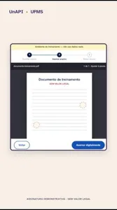
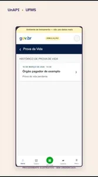
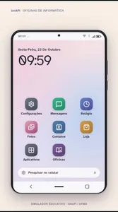
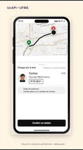
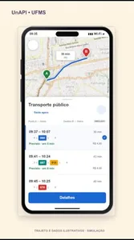
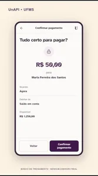
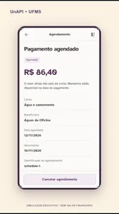
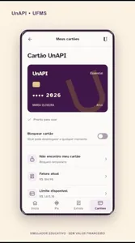
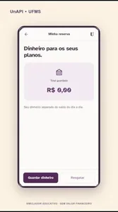

Materiais da oficinaVídeos das oficinas
14 vídeos curtos para aprender
Aprenda com vídeos curtos
Escolha um assunto e assista aos vídeos no seu ritmo.
Informática básica
Para começar a usar o computador com tranquilidade.
Serviços digitais e Gov.br
Orientações para acessar serviços públicos pela internet.
Introdução ao Gov.br
Entenda para que serve a plataforma de serviços digitais.
Assistir ao vídeo
Acesso e contas do Gov.br
Conheça o acesso à conta e seus cuidados básicos.
Assistir ao vídeo

Assinatura de documentos Veja como usar a assinatura eletrônica pelo Gov.br. Assistir ao vídeo
Prova de vida digital Aprenda a verificar a prova de vida com segurança. Assistir ao vídeoCelular e mobilidade
Ajustes e aplicativos para facilitar o dia a dia.

Aumentar as letras do celular Deixe as palavras mais fáceis de ler na tela. Assistir ao vídeo
Pedir uma corrida com segurança Confira os dados antes de entrar no veículo. Assistir ao vídeo
Escolher a melhor rota Compare caminhos e opções de transporte pelo celular. Assistir ao vídeoBanco, Pix e segurança
Dicas práticas para cuidar do seu dinheiro e evitar golpes.

Conferir um Pix antes de enviar Revise os dados do destinatário antes de confirmar. Assistir ao vídeo Cuidado com o golpe do número novo Saiba o que fazer quando alguém pede Pix por outro número. Assistir ao vídeo
Conta agendada não é conta paga Entenda a diferença entre agendamento e pagamento. Assistir ao vídeo
Como bloquear um cartão perdido Veja por onde começar se perder seu cartão. Assistir ao vídeo
Guardar dinheiro para seus planos Conheça uma forma simples de organizar uma reserva. Assistir ao vídeoDica: ao terminar um vídeo, use o botão Voltar do navegador para retornar a esta página.